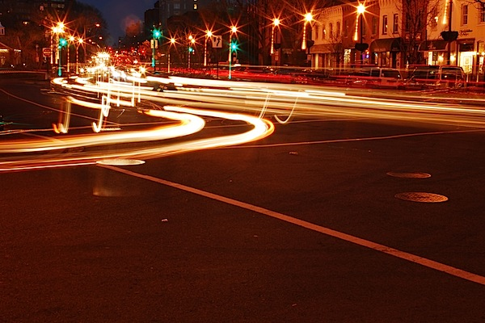
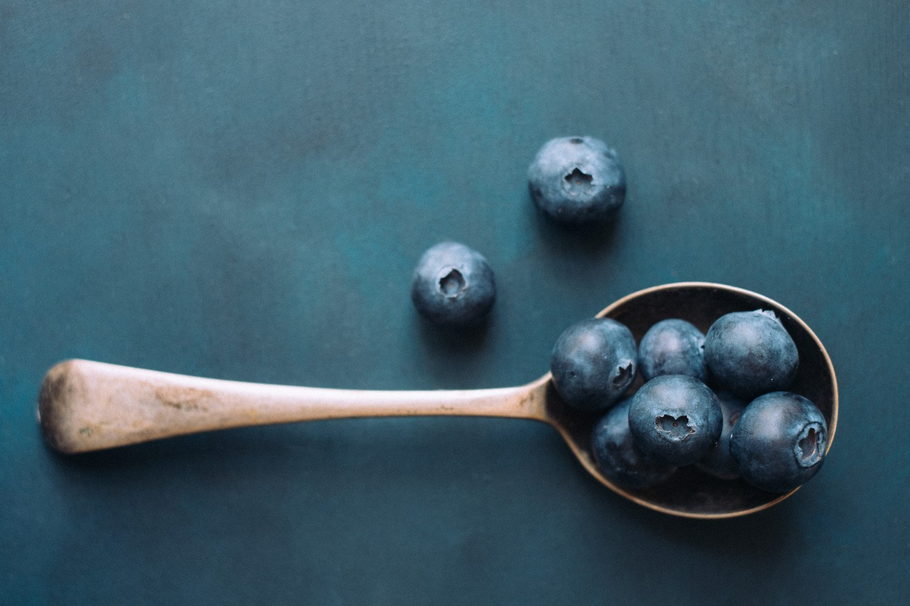
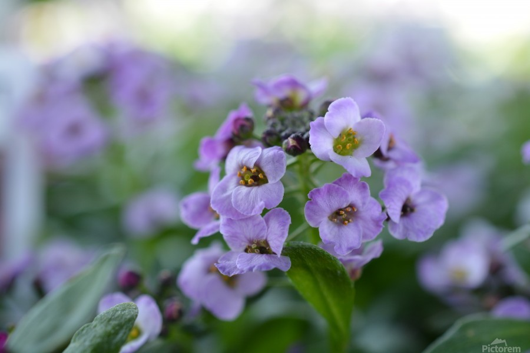
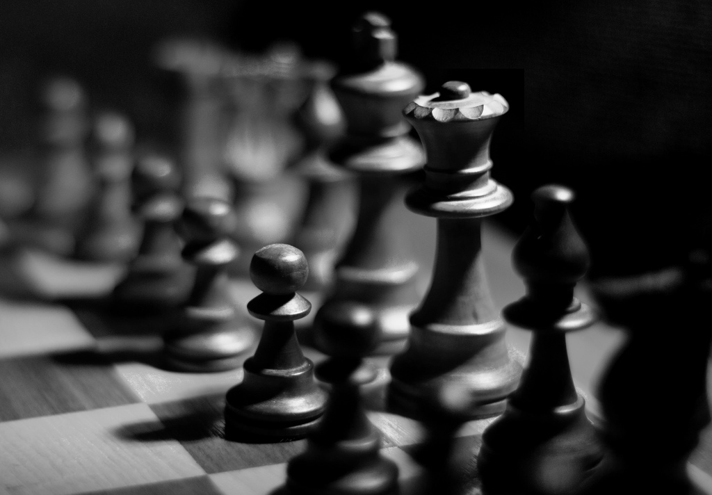
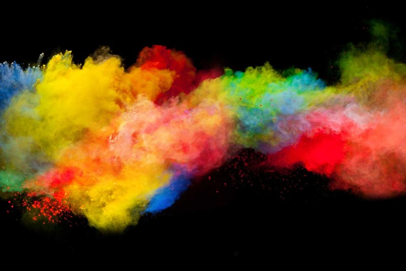

Animate Objects

Of all the wildlife on our planet, birds may be the most varied and colorful, which makes them extremely fun to photograph. They're also one of the most challenging subjects, so when you capture one just right, it's an unforgettable experience.
Photographing a busy street can bring amazing affect to capture the targeted audience attention. You can blur the carswhiel keeping the street in a static postition, indicating that the cars are moving quickly. It’s also important to use a tripod so your camera remains steady.
Inanimate Objects
The beauty in this photo is how simple it is. These types of photos demonstrates that one can find beauty in almost anything. All you have to do is find a subject and figue out the colours that go well with that colour and then just find out the different angles and styles of taking the photo of something so pure.
Flowers are the most common type of photography that many people enjoy. Different people have different perspectives on how to take a photo of a flower. Find your way. A field of flowers? One simple flower? One flower in focus and the rest are blured? Finding your style can change a photo immensley.
Black and White
Chess is a game of the mind. Looking at this photo makes one think. What move is the player on? why was this photo taken at this move and in this angle? So many questions with just one black and white photo

Black and white photography can make a photo more meanignful than a coloured one. This mans expression together with the effect of the balck and white tone can tell a story and istories through photography can be very powerful
Colour Photography
Colour photography can be just as exciting as and other types og photography